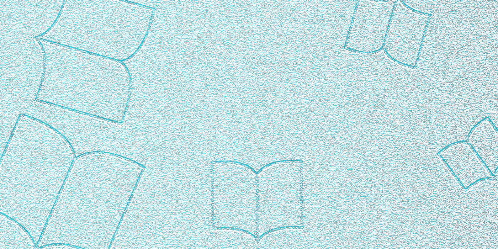

▪ 행사 일정
| 일 |
월 |
화 |
수 |
목 |
금 |
토 |
|
|
|
1 |
2 |
3 |
4 |
| 5 |
6 |
7 |
8 |
9 |
10 |
11 |
| 12 |
13 |
14 |
15 |
16 |
17 |
18 |
| 19 |
20 |
21 |
22 |
23 |
24 |
25 |
| 26 |
27 |
28 |
29 |
30 |
31 |
|
▪ 문화 행사
‘생각구름도서관’에서는 아이들이 직접 책 표지를 디자인해 보는 체험 행사를 마련했습니다. 이번
행사는 아이들의 창의력과 표현력을 키울 수 있는 뜻깊은 시간으로, 0000년 00월 00일 00시에
진행됩니다. 여러분의 많은 참여와 관심 바랍니다.
▪ 이달의 도서

천선란
아무도 오지 않는 곳에서
이번 달에 선정된 추천 도서는 위와 같습니다. 다양한 연령과 관심사를 아우르는 도서들로 구성되어
있으니, 많은 이용자분들께서 관심을 가지고 함께 읽어주시기 바랍니다.
▪ 생각구름도서관 인사말
생각구름도서관에 오신 것을 진심으로 환영합니다. 우리 도서관은 아이들부터 어르신까지, 모든 세대가 함께
머물며 책의 즐거움을 느낄 수 있는 열린 공간입니다. 편안한 분위기 속에서 마음을 쉬어가고, 새로운 지식을
만나며, 다양한 이야기를 통해 상상력을 넓힐 수 있도록 풍부한 자료와 다채로운 프로그램을 준비해
두었습니다. 조용한 독서부터 가족이 함께 즐길 수 있는 문화 활동까지, 생각구름도서관에서 따뜻한 하루를
채워보시기 바랍니다.
▪ 생각구름도서관 오시는 길
▪ 생각구름도서관 연락처
| 대표 번호 |
000-0000-0000 |
| 도서관 업무 총괄 |
000-0000-0000 |
| 도서 목록 문의 |
000-0000-0000 |
| 도서관 문화 체험 문의 |
000-0000-0000 |
| 온라인 서비스 문의 |
000-0000-0000 |
| 어린이 도서관 문의 |
000-0000-0000 |
-
올해는 행사가 많이 준비되어 있습니다. 그러니 교통 안전에 신경써주시길 바랍니다.
-
올해는 행사가 많이 준비되어 있습니다. 그러니 교통 안전에 신경써주시길 바랍니다.
-
올해는 행사가 많이 준비되어 있습니다. 그러니 교통 안전에 신경써주시길 바랍니다.
-
올해는 행사가 많이 준비되어 있습니다. 그러니 교통 안전에 신경써주시길 바랍니다.
-
올해는 행사가 많이 준비되어 있습니다. 그러니 교통 안전에 신경써주시길 바랍니다.
-
올해는 행사가 많이 준비되어 있습니다. 그러니 교통 안전에 신경써주시길 바랍니다.
-
올해는 행사가 많이 준비되어 있습니다. 그러니 교통 안전에 신경써주시길 바랍니다.
-
올해는 행사가 많이 준비되어 있습니다. 그러니 교통 안전에 신경써주시길 바랍니다.
-
올해는 행사가 많이 준비되어 있습니다. 그러니 교통 안전에 신경써주시길 바랍니다.
-
올해는 행사가 많이 준비되어 있습니다. 그러니 교통 안전에 신경써주시길 바랍니다.
해외 도서
신작 도서
이달의 도서
체험활동 안내
12월 체험활동 안내
## **🎄 직접 만들어 보는 작은 책 만들기 체험**
12월을 맞아 도서관에서는 특별한 체험활동 **‘직접 만들어 보는 작은 책’** 프로그램을 준비했습니다.
그림책이나 이야기책을 좋아하는 어린이와 가족들이 함께 참여하여, **나만의 작은 책을 직접 기획하고 꾸며보는 창작 체험**입니다.
아이들의 상상력과 표현력을 키우고, 자신만의 이야기를 만들어보는 특별한 시간이 될 것입니다.
---
## ✨ **프로그램 내용**
* 다양한 종이와 재료를 활용해 **손바닥만 한 작은 책**을 직접 만들어봅니다.
* 좋아하는 주제나 자유로운 상상을 바탕으로 **표지 디자인, 이야기 구성, 삽화 그리기** 등 책 제작의 전 과정을 경험합니다.
* 완성된 작은 책은 **참가자가 소장**할 수 있습니다.
---
## 🗓 **운영 일정**
* 일시: 2025년 12월 중 매주 토요일 오후 2시–4시
* 회차별 운영으로 원하시는 날짜에 신청할 수 있습니다.
---
## 👧🧒 **참여 대상**
* 초등학생(1~4학년)
* 책 만들기에 관심 있는 어린이라면 누구나
---
## 👥 **정원**
* 회차별 15명
* 선착순 모집
---
## 📍 **장소**
* OO도서관 1층 어린이문화실
---
## 🧰 **준비물**
* 도서관에서 기본 재료를 제공합니다.
* 개인이 원하는 스티커·색연필·사진 등 꾸미기 재료를 가져와도 좋아요!
---
## 📌 **신청 방법**
* 도서관 홈페이지 → ‘체험활동 신청’ 메뉴에서 온라인 접수
* 또는 어린이자료실 데스크 방문 접수
* 중복 신청은 제한될 수 있으며, 회차별 마감 시 신청이 어려울 수 있습니다.
---
## ⚠️ **유의사항**
* 재료 준비 관계로 **사전 취소는 프로그램 하루 전까지** 가능합니다.
* 활동 중 안전을 위해 보호자의 자리 이탈은 삼가 주세요.
* 사진 촬영이 이루어질 수 있으며, 홍보용 사용 동의를 부탁드립니다.
---
## 📞 **문의**
* 어린이자료실: 000-0000
* 이메일: [library@xxxx.go.kr](mailto:library@xxxx.go.kr)
체험활동 신청
체험활동 **신청서**에는 참가자 정보를 정확히 파악하고, 프로그램 진행에 필요한 사항을 미리 확보할 수 있는 항목이 포함되면 좋습니다.
아래는 “직접 만들어 보는 작은 책” 체험활동에 잘 맞는 **신청서 구성 예시**입니다.
---
# 📄 체험활동 신청서에 포함하면 좋은 내용
## 1. **신청자 기본 정보**
* **참가자 이름**
* **학교 / 학년**
* **생년월일**
* **보호자 이름**
* **보호자 연락처(휴대폰)**
* **비상 연락처(선택)**
---
## 2. **참여 회차 선택**
* 참여 가능한 날짜를 선택하는 체크박스 또는 드롭다운
* 예:
* □ 12월 7일(토) 14:00
* □ 12월 14일(토) 14:00
* □ 12월 21일(토) 14:00
* □ 12월 28일(토) 14:00
---
## 3. **특이사항 안내**
프로그램 진행을 위해 필요한 정보가 있을 경우 기재하도록 합니다.
* 알레르기(접착제, 물감 등) 여부
* 건강·발달 관련 참고 사항
* 기타 전달 사항
---
## 4. **개인 준비물 관련 선택 항목(선택)**
* 가져올 개인 꾸미기 재료가 있다면 기재
* 예: 스티커 / 사진 / 색연필 등
---
## 5. **사진 및 영상 촬영 동의**
프로그램 운영 시 홍보용 사진 촬영 안내 및 동의 필수 항목
* □ 촬영 및 홍보 활용에 동의합니다.
* □ 동의하지 않습니다. *(비동의 시 대안 안내 필요)*
---
## 6. **개인정보 수집·이용 동의**
법적 필수 문구 + 체크박스
* 개인정보 수집·이용 목적
* 보유 기간
* 동의 여부
* □ 동의합니다
* □ 동의하지 않습니다 *(미동의 시 신청 불가 설명)*
---
## 7. **참가 안내 확인 체크**
프로그램 규정을 이해했는지 확인
* □ 무단 불참 시 향후 프로그램 신청이 제한될 수 있음에 동의합니다.
* □ 안전수칙 및 운영자의 안내를 준수하겠습니다.
* □ 취소는 프로그램 하루 전까지 가능함을 확인했습니다.
---
## 8. **서명**
* 보호자 서명 (전자 서명 또는 체크 방식)
---
# ✔ 요약하면
신청서에는 **① 참가자 정보 + ② 날짜 선택 + ③ 안전·동의 관련 항목 + ④ 운영 규정 확인**이 꼭 포함되면 좋습니다.
도서관에서 관리하기 편하고, 프로그램 운영의 안전성도 높아집니다.
원하시면 위 내용을 기반으로 **실제 신청서 양식(표 형태 / Google Form 스타일 / 한 페이지 문서)**로도 만들어 드릴 수 있어요!
11월 체험활동 기록
e북 서비스
도서관 홈페이지의 **e북(eBook) 서비스** 메뉴에는 이용자가 전자책을 쉽게 이해하고 사용할 수 있도록 **서비스 안내 + 이용방법 + 지원 환경 + 자주 묻는 질문** 등이 포함되면 좋습니다.
아래는 실제 도서관 홈페이지 수준으로 구성한 권장 요소입니다.
---
# 📚 e북 서비스 메뉴에 포함하면 좋은 내용
## 1. **서비스 소개**
* e북 서비스의 목적
* “도서관 회원이라면 언제 어디서나 모바일·PC로 전자책을 이용할 수 있는 서비스입니다.”
* 제공되는 콘텐츠 종류
* 전자책, 오디오북, 전자잡지, 학습 콘텐츠 등
* 제휴 플랫폼 안내
* 예: 교보문고 전자도서관, 예스24 eBook, 밀리의 서재 등 ※ 실제 사용 중인 플랫폼 명시
---
## 2. **이용 대상**
* 도서관 정회원 또는 회원 인증을 완료한 이용자
* 연령 제한 여부(어린이, 청소년, 성인 등)
---
## 3. **이용 방법(단계별 안내)**
### ▶ 웹으로 이용하는 방법
1. 도서관 홈페이지 로그인
2. e북 서비스 메뉴 접속
3. 원하는 전자책 검색
4. [대출] 또는 [바로보기] 버튼 클릭
5. 웹 리더기로 즉시 읽기
### ▶ 모바일 앱으로 이용하는 방법
1. 전자책 전용 앱 다운로드(앱스토어/플레이스토어 링크)
2. 도서관 선택
3. 회원 인증
4. 전자책/오디오북 대출 후 이용
※ 실제 사용 플랫폼의 UI에 맞게 구체화 가능
---
## 4. **대출 · 반납 규정**
* 1인 대출 권수
* 대출 기간(예: 14일)
* 자동 반납 여부
* 예약 가능 권수
* 연장 가능 여부
* 동시 이용 제한(예: 기기 2대까지 가능)
---
## 5. **e북 뷰어 및 기기 지원**
* PC 지원 여부(Windows, macOS)
* 모바일 앱 지원(iOS, Android)
* 지원 브라우저(Chrome, Safari 등)
* 오프라인 저장 가능 여부
* 오디오북 지원 기능
---
## 6. **콘텐츠 안내**
* 신간 전자책 모음
* 인기 대출 전자책
* 추천 북큐레이션(주제별·연령별)
* 오디오북 추천
* 전자잡지 최신호 안내
---
## 7. **이용 시 유의사항**
* 아이디 공유 금지
* 대출 중 기기 변경 시 주의점
* DRM(저작권 보호)으로 인해 파일 복사 불가
* 이용 불가 시 해결 방법(앱 재설치, 쿠키 삭제 등)
---
## 8. **자주 묻는 질문(FAQ)**
* “어떤 앱을 설치해야 하나요?”
* “대출이 안 될 때 어떻게 해야 하나요?”
* “반납은 어떻게 하나요?”
* “동시에 몇 권까지 읽을 수 있나요?”
* “예약된 책은 언제 빌릴 수 있나요?”
---
## 9. **문의처**
* 전자자료 담당 부서
* 전화번호 / 이메일
* 이용 가능 시간
---
# ✔ 요약
e북 서비스 페이지는 **(1) 서비스 소개 → (2) 이용 방법 → (3) 대출 규정 → (4) 기기 안내 → (5) FAQ** 순서가 가장 이해하기 쉽고, 이용자의 e북 접근성을 크게 높여줍니다.
원하시면 위 내용을 기반으로 **도서관 홈페이지에 바로 올릴 수 있는 실제 안내 페이지 형태**로 깔끔하게 재작성해 드릴게요!

질문 및 답변
아래는 **도서관 홈페이지 FAQ(질문·답변)로 흔히 제공되는 5가지 항목**을 자연스럽게 구성한 예시입니다. 어떤 도서관에도 무난하게 사용할 수 있는 범용형입니다.
---
# 📌 도서관 자주 묻는 질문(FAQ)
### **1. Q. 도서관 회원증은 어떻게 발급받나요?**
A. 신분증(주민등록증·학생증·여권 등)을 지참하시고 도서관 데스크를 방문하시면 즉시 발급됩니다.
미성년자는 보호자의 신분증과 가족관계 확인 서류가 필요할 수 있습니다.
---
### **2. Q. 책은 몇 권까지, 얼마나 빌릴 수 있나요?**
A. 1인당 **○권까지**, **○일간** 대출이 가능합니다.
대출 기간 연장은 1회 가능하며, 예약 도서나 연체 도서는 연장할 수 없습니다.
---
### **3. Q. 반납 기한을 넘기면 어떻게 되나요?**
A. 반납일을 지키지 못하면 연체된 일수만큼 대출이 제한됩니다.
예: 3일 연체 → 3일 동안 대출 불가.
연체 기간 동안은 신규 대출과 예약 기능이 제한됩니다.
---
### **4. Q. eBook이나 오디오북은 어떻게 이용하나요?**
A. 도서관 홈페이지의 **e북 서비스 메뉴**에서 로그인 후 이용하실 수 있습니다.
또는 전용 앱을 설치한 뒤 도서관을 선택해 인증하면 전자책과 오디오북을 대출할 수 있습니다.
---
### **5. Q. 열람실 좌석은 어떻게 배정되나요?**
A. 열람실은 **좌석관리시스템(또는 비치된 단말기)**를 통해 이용 가능합니다.
입실 시 좌석을 선택하고, 퇴실 시 반드시 반납 처리해 주세요.
일정 시간 동안 자리를 비우면 자동 퇴실 처리될 수 있습니다.
---
필요하시면 **어린이자료실용 FAQ, e북 서비스 전용 FAQ, 체험활동 관련 FAQ, 대출·반납 전용 FAQ 등**으로 분야별로 나누어 다시 작성해 드릴 수도 있어요!
온라인 도서 강좌
이번주 도서 강좌
어린이 도서관 안내
아래는 도서관 홈페이지의 **‘어린이도서관 안내’** 메뉴에 자연스럽게 들어갈 법한 내용을 구성한 예시입니다. 실제 도서관에서 사용하는 톤에 맞춰 깔끔하고 친절하게 작성했습니다.
---
# 📚 어린이도서관 안내
## 🌈 어린이도서관 소개
어린이도서관은 유아부터 초등학생까지 어린이들이 책을 통해 **상상력과 창의력을 키울 수 있는 독서·문화 공간**입니다.
다양한 그림책, 지식책, 학습자료뿐 아니라 편안하게 책을 읽고 놀이하며 머무를 수 있는 독서환경을 제공합니다.
가족이 함께 방문해 즐길 수 있는 프로그램도 상시 운영하고 있습니다.
---
## 📖 자료 구성
어린이들의 눈높이에 맞춰 다음과 같은 자료가 비치되어 있습니다.
* **그림책·동화책**
* **아동 지식책(과학·역사·예술 등)**
* **유아용 보드북**
* **만화·학습만화(연령 제한 운영 가능)**
* **어린이 신문·잡지**
* **부모·교사를 위한 육아·교육 도서 코너**
---
## 🧒 이용 대상
* 유아, 어린이(초등학생)
* 보호자 동반 방문 가능
* 어린이 전용 공간으로, 성인의 장시간 학습 이용은 제한될 수 있습니다.
---
## 🕒 운영 시간
* 평일: 오전 9시 ~ 오후 ○시
* 주말: 오전 9시 ~ 오후 ○시
* 휴관일: 매주 ○요일, 법정공휴일(도서관 사정에 따라 변동 가능)
---
## 📍 이용 시설
* **어린이열람실**: 자유롭게 앉아 독서 가능
* **유아독서공간**: 카펫·낮은 책장으로 안전하고 편안한 환경
* **이야기방**: 독서 프로그램 및 공연 운영
* **북큐레이션 코너**: 주제·연령별 추천도서 전시
* **멀티코너(운영 시)**: 어린이용 멀티미디어 학습 지원
---
## 🎲 정기 프로그램
어린이도서관에서는 다양한 독서·문화 활동을 운영합니다.
* **이야기 들려주는 날(그림책 읽어주기)**
* **독서토론 모임(초등 저학년/고학년 분리 운영 가능)**
* **창작·미술 체험 프로그램**
* **독서교실(방학 프로그램)**
* **부모·자녀 함께하는 독서 활동**
---
## 🧑🏫 이용 안내 및 규칙
* 책은 깨끗하게 이용하고, 읽은 뒤에는 제자리에 정리해 주세요.
* 안전을 위해 뛰거나 큰 소리를 내는 행동은 자제해 주세요.
* 음식물 반입은 제한됩니다.
* 보호자는 유아의 안전한 이용을 위해 동반해 주세요.
* 도서 대출 시 어린이 회원증 또는 보호자 회원증이 필요합니다.
---
## 📞 문의
* 어린이자료실: 000-0000
* 이메일: [library@xxxx.go.kr](mailto:library@xxxx.go.kr)
* 안내 데스크에 언제든 도움을 요청하실 수 있습니다.
---
원하시면 **해당 내용을 실제 홈페이지 섹션 형태로 디자인한 버전**,
또는 **유아/초등/가족 단위별 안내 페이지**로도 다시 정리해 드릴게요!
시설 안내
어린이도서관에는 일반 자료실과는 다른 **어린이 전용, 교육·놀이·창의 활동 중심의 특별한 시설**이 갖춰져 있는 경우가 많습니다.
아래는 실제 어린이도서관에서 많이 운영하는 **특별 시설 10가지**입니다.
---
# 🌟 어린이도서관에 있을 만한 특별한 시설
### **1. 이야기방(스토리텔링 룸)**
그림책 읽어주기, 동화 공연, 인형극 등을 위한 방음 시설이 있는 작은 공연 공간.
### **2. 유아 놀이·독서 공간(북토피아/유아존)**
낮은 책장과 안전 매트, 쿠션이 있는 유아 전용 독서·놀이 공간.
부모와 함께 책을 읽을 수 있도록 구성됨.
### **3. 북아트·창작실**
종이공예, 만들기 수업, 작은 책 만들기 등 창작 프로그램을 위한 작업 공간.
### **4. 디지털 체험존(디지털 키오스크 / 인터랙티브월)**
터치 스크린, 인터랙티브 프로젝터 등을 이용해
자연·과학·예술을 체험형으로 학습할 수 있는 공간.
### **5. 어린이 멀티미디어룸**
교육용 컴퓨터, 오디오북 청취석, 전자책 체험, 학습 프로그램 이용 등이 가능한 구역.
### **6. 부모·자녀 공동 학습실(패밀리룸)**
보호자와 아이가 함께 앉아 학습하거나 독서할 수 있는 편안한 형태의 독립 공간.
### **7. 과학·코딩 체험 교실**
아두이노, 로봇 코딩, 메이커 교육, 간단한 실험 등이 가능한 체험형 교육 공간.
### **8. 장난감·교구 대여실(토이라이브러리)**
발달 단계에 맞는 장난감·교구를 자유롭게 이용하거나 대여할 수 있는 곳.
### **9. 감각 발달실(톡톡룸)**
유아의 감각 발달을 돕는 촉감 놀이, 빛·소리 체험 등을 위한 특수 공간.
### **10. 독서터널·북카페형 휴식 공간**
책으로 둘러싸인 작은 터널, 아늑한 독서 좌석, 미니 북카페 분위기 공간 등
아이들이 책과 친해질 수 있는 독특한 인테리어 요소.
---
# ✔ 요약
어린이도서관의 특별한 시설은
**“놀이와 학습을 결합”**, **“안전하고 편안한 독서 환경 제공”**, **“창의력·감각 발달 지원”**
이 세 가지 목적을 중심으로 구성됩니다.
필요하시면 위 목록을 기반으로 **홈페이지용 안내문**, **홍보 문구**, **시설 소개 디자인 텍스트**로도 다시 정리해 드릴게요!
도서 목록
프로그램
어린이도서관에서는 **독서·창의·문화·감각·가족 참여형** 등 다양한 목적의 프로그램을 운영할 수 있습니다.
아래는 실제 어린이도서관에서 많이 진행되는 **프로그램 유형별 추천 목록**입니다.
---
# 📚 어린이도서관에서 진행할 만한 프로그램
## 🌈 1. 독서 기반 프로그램
* **이야기 들려주는 시간(그림책 읽어주기)**
* **동화 속 여행(책 한 권 깊이 읽기 활동)**
* **북 캐릭터 따라 그리기 클래스**
* **초등 독서토론 교실(저학년 / 고학년 분리)**
* **독서 뱃지·스탬프 프로그램(읽은 책 기록 인증)**
* **작가 초청 강연·그림책 작가 만남**
---
## 🎨 2. 창작·예술 프로그램
* **북아트(나만의 책 만들기)**
* **그림책 만들기 프로젝트**
* **종이공예, 클레이아트, 스케치북 아트**
* **책 속 장면 그리기 미술 교실**
* **만화·웹툰 기초 그리기(고학년)**
---
## 🧪 3. 과학·탐구 프로그램
* **그림책 연계 과학 실험(예: ‘구름 만들기’)**
* **자연 관찰 활동(도서관 정원/근처 공원 연계)**
* **환경·지구 생태 수업(지구 지키기 프로젝트)**
* **간단한 공학 만들기(종이 헬리콥터, 풍력 자동차 등)**
---
## 🤖 4. 디지털·코딩 프로그램
* **언플러그드 코딩 놀이(비전기, 카드·게임 기반)**
* **스크래치·엔트리 기초 코딩**
* **로봇 조종 체험(비버봇, 오조봇 등)**
* **AR/VR 체험(도서관에서 안전 운영 가능한 범위)**
---
## 🎭 5. 문화·체험 프로그램
* **인형극·그림자극 공연**
* **도서관 속 보물찾기(자료 탐색 게임)**
* **북큐레이션 투어(주제별 도서 안내)**
* **시즌 행사(크리스마스·어린이날·독서의 달 이벤트)**
---
## 🧒 6. 유아·부모동반 프로그램
* **북스타트(영유아 책꾸러미)**
* **부모와 함께하는 책놀이 시간**
* **감각 놀이 프로그램(촉감·빛·소리)**
* **영유아 발달 놀이 교실(리듬놀이·오감 놀이)**
---
## 👨👩👧 7. 가족 참여 프로그램
* **가족 독서 챌린지**
* **부모-자녀 그림책 대화법 강의**
* **가족 보드게임 데이**
* **가족 독서 골든벨 / 퀴즈대회**
---
## ✏️ 8. 계절·특성화 프로그램
* **겨울방학 독서교실 / 여름방학 글쓰기 교실**
* **도서관 진로 체험(사서 직업 체험)**
* **책과 함께하는 계절 만들기(크리스마스 장식·봄 꽃 만들기 등)**
* **지역 문화 연계 체험(전통놀이, 공예, 마을 탐방)**
---
# ✔ 요약
어린이도서관 프로그램은
**독서 기반 + 창작 활동 + 체험 + 가족 참여**를 균형 있게 구성하는 것이 좋습니다.
원하시면 특정 연령(유아/저학년/고학년)별 추천 목록이나
“월별 운영 계획표” 형식으로 다시 정리해 드릴 수 있어요!